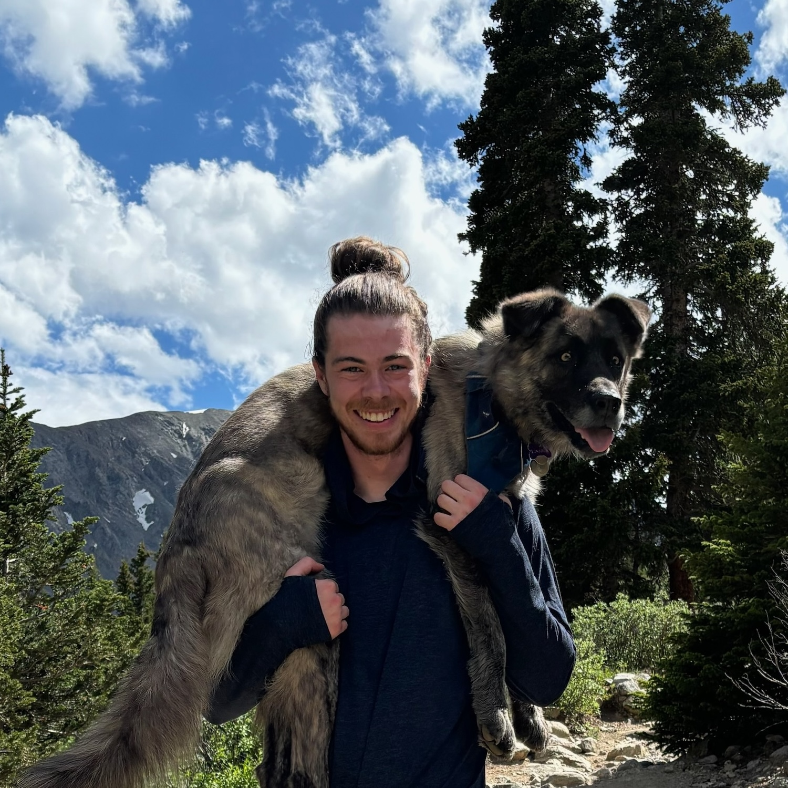

Ethan Arrowood
Optimizing Software, Overcoming Summits
Highlights
Experience
-
HarperDB - Senior Software Engineer
August 2024 - Present
- Developing a distributed systems platform that combines database, caching, application, and streaming functions into a single technology.
- Contributing with Node.js and C++
-
Vercel - Senior Software Engineer
February 2022 - June 2024
- Maintained Vercel's core build platform supporting numerous runtimes, package managers, and frameworks
- Lead development of the configuration override feature enabling finer control of Vercel deployments
- Created the Vercel Azure DevOps Extension enabling improved CI/CD for enterprise customers
- Developed a comprehensive e2e testing suite for the zero config build pipeline
- Represented company at multiple open source organizations including OpenJS Foundation, WinterCG, and TC39
- Contributed multiple performance improvements to the Next.js framework, notably improving streaming throughput by 20%
- Created the experimental Next.js Test Mode feature for built in e2e testing
-
Codecademy - Subject Matter Expert
May 2021 - January 2024
- Subject Matter Expert for multiple courses and curriculums
- Courses: Node.js, WebSockets, and Build Tools
- Curriculums (career paths): Full Stack, Front-End, and Back-End
-
Digital Ready - Computer Science Professional Advisor & Board Member
January 2020 - December 2022
- Provided professional experience and feedback for the development of the AP CS and Year 13 curriculums
- Conducted professional development workshops for the AP Computer Science Cohort (March 2021)
-
Microsoft - Software Engineer II
November 2019 - January 2022
- Worked alongside Microsoft's largest partners, creating innovative solutions to solve real business challenges
- Exercised strong engineering fundamentals such as agile development, CI/CD, testing, and pair programming
- Built enterprise solutions utilizing many unique Azure services and modern cloud engineering toolsets
-
Wentworth Institute of Technology - B.S. Computer Science
September 2016 - August 2019
- Achieved Dean's List in all full-time semesters demonstrating continuous academic excellence
- Earned a Bachelor of Science in Computer Science and an Applied Mathematics Minor
- Earned Presidential Award for Academic Excellence and Co-Curricular Involvement
- Member of ΦΣΠ National Honors Fraternity
- 2x Wentworth Professional Development Grant Recipient
- Participated in Wentworth Leadership Institute Phase 1 & 2
- Vice President of Wentworth Computer Science Soceity
-
Microsoft - Software Engineering Intern
July 2018 - December 2018
- Software Engineering intern on the Commercial Software Engineering team
- Worked with various technologies such as Docker, Kubernetes, JavaScript (Node.js & React), Python (Flask), and Azure Cloud Platform
-
GitHub Campus Expert
June 2018 - August 2019
- Taught students how to use Git and the GitHub platform
- Mentored individuals making their first open source contributions
-
Griffith University - Study Abroad
February 2018 - June 2018
- Attended Griffith University in Gold Coast, Australia
- Studied computer science, international politics, and mathematics
-
LeaderShape National Institute
February 2018 - June 2018
- Experienced and practiced leading with integrity and facilitating change
- Embraced and ideated on challenges and solutions around diversity, inclusion, and accessibility
-
Accelerate Innovation and Entrepreneurship Center
October 2016 - August 2019
- Practiced and demonstrated innovative problem-solving skills through a startup incubator-like program
- Taught and lead young entrepreneurs to solve problems using sustainable and innovative methods
- Co-developed programs facilitating solution-driven conversations solving Boston's most pressing issues
-
HackWITus
October 2016 - August 2019
- Co-developed hackathon for students with a mission to promote diversity and accessibility in our tech community
- Lead 10 + person coordinating team, recruited company sponsorships, and executed main event
- Managed an annual budget of $15,000 and an average attendance rate of 175 students
-
Creative Click Media - Web Developer
October 2015 - October 2016
- Developed custom solutions for local business websites using web development fundamentals